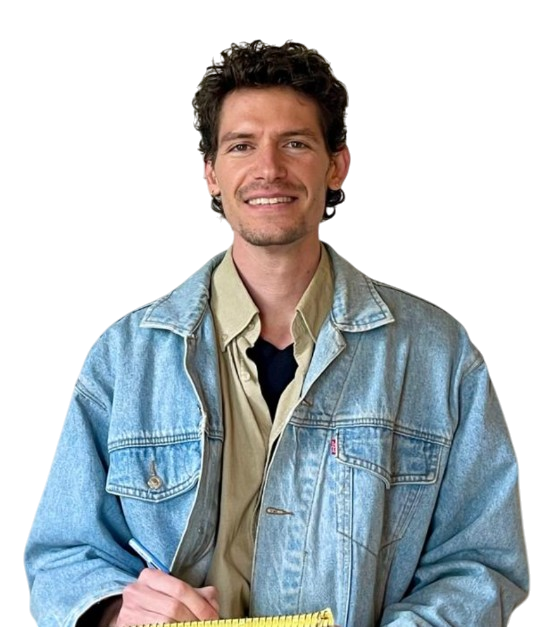

טיפול נטורופתי ורפלקסולוגי בבעיות עיכול וכבד שומני. בלי דיאטות מקלות, בלי תרופות — דרך הגוף, בקצב שלך. שיחת אבחון ראשונה — ללא עלות.
לא משנה כמה דיאטות ניסית, כמה תוספים קנית, כמה פעמים אמרו לך "פשוט תרד במשקל" — הבטן עדיין נפוחה, הבדיקות עדיין מראות אותו דבר, והאנרגיה לא חוזרת.
אתה לא יודע מה אפשר יהיה לאכול היום בלי שתשלם על זה אחרי שעה. הבטן נפוחה, כבדה, וכל בגד מרגיש צמוד יותר ממה שהיה בבוקר.
הבדיקות חוזרות עם אותם סימונים אדומים. הרופא ממליץ "לרדת במשקל" — ואתה תקוע שנים באותה נקודה, בלי שום הנחיה ברורה מה לעשות הלאה.
אתה קם יותר עייף ממה שהלכת לישון. הקפה לא עוזר, החופשה לא עוזרת — והגוף שלך פשוט לא מתחזק כמו פעם.
כל חודש מתווסף עוד מאכל לרשימה השחורה. גלוטן, לקטוז, ביצים — והרשימה רק מתארכת. אכילה הפכה לחישוב מתמטי במקום לעונג.
הגישה שלי משלבת רפלקסולוגיה קלינית, נטורופתיה ותזונה. במקום להחליף תסמין בתרופה, אנחנו מחפשים את שורש הבעיה — ובונים יחד אורח חיים שיעבוד לך גם בעוד שנה, גם בעוד חמש.
דרך אבחון רפלקסולוגי, אנמנזה מלאה ובדיקות שכבר עשית — בונים מפה מדויקת של מה שמערכת העיכול והכבד שלך באמת מבקשים.
במקום רשימת איסורים, בונים יחד אורח חיים — תזונה מותאמת, צמחי מרפא נכונים, ושינויים קטנים שמצטברים לתוצאה ארוכת טווח.
לא נשארים לבד עם דף הוראות. ליווי שוטף, התאמות לאורך הדרך, וזמינות בווטסאפ — כי שינוי אמיתי קורה ביום-יום, לא בפגישה.
כשהגוף מקבל את מה שהוא צריך — הוא יודע לרפא את עצמו. — רון הפלר · נטורופת N.D
שיפור בעיכול, ירידה בנפיחות, חזרה של האנרגיה — ובמקרים רבים גם ערכי כבד שמתחילים לרדת בבדיקות הבאות. זאת לא הבטחה, זאת תוצאה של גישה שמטפלת בשורש ולא בתסמין. האנשים שמגיעים אליי כבר ניסו דרכים אחרות — הם מחפשים תוצאה.
הגישה הנטורופתית היא לא לכולם. היא לאלה שכבר עברו את השלב של "אולי זה יעבור מעצמו".
תהליך אישי לחלוטין — לא תבנית קבועה. מתקדמים בקצב שלך, עם יעדים מדידים שאפשר לראות בבדיקות.
30 דקות בטלפון או בזום. אתה מספר מה קורה, אני שואל את השאלות הנכונות, ויחד מבינים אם התהליך מתאים לך — בלי דחיפות ובלי מחויבות.
פגישה ראשונה במרפאה או בזום. אנמנזה מלאה, סקירת בדיקות הדם שלך, ואבחון רפלקסולוגי. בסוף הפגישה — מפת דרכים אישית כתובה.
תוכנית כתובה ומפורטת: תזונה, צמחי מרפא, תוספים נדרשים והנחיות יומיות. הכל מותאם לקצב, ללוז ולתקציב שלך — לא תבנית קבועה.
מפגשי המשך כל שבועיים-שלושה. עוקבים אחרי השיפור, מכווננים את התוכנית, ומקבלים תשובות בווטסאפ בין הפגישות. עד שהתוצאה מתייצבת.

שמי רון הפלר, נטורופת מוסמך (N.D) ורפלקסולוג קליני בעל ניסיון רב שנים בליווי מטופלים עם בעיות עיכול, כבד שומני ובעיות מטבוליות.
הגעתי לתחום אחרי שראיתי בקרובים שלי איך הרפואה הקונבנציונלית עוצרת בנקודה מסוימת — נותנת אבחנה, אבל לא תמיד נותנת פתרון. למדתי בארץ ובחו"ל, והתמחיתי בקשר בין מערכת העיכול, הכבד והשפעתם על האנרגיה היומית והרגישויות.
היום אני מלווה מטופלים מעמק חפר ובאונליין מכל הארץ. הגישה שלי משלבת רפלקסולוגיה, נטורופתיה ותזונה — ותמיד מחפשת את הפתרון שיהיה גם יעיל וגם בר-קיימא לטווח ארוך.
לא מצאת תשובה? כתוב לי בווטסאפ — אענה אישית תוך 24 שעות.
שיחת האבחון חינמית, נמשכת כ-30 דקות, ומאפשרת לי להבין אם התהליך מתאים לך — ולך להבין אם אני האדם הנכון ללוות אותך. בלי מחויבות, בלי מכירה, בלי לחץ.
קבע שיחת אבחון בווטסאפ ←